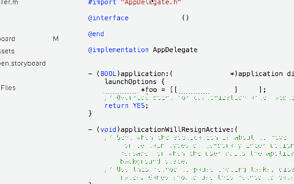
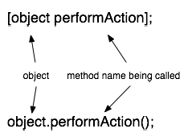
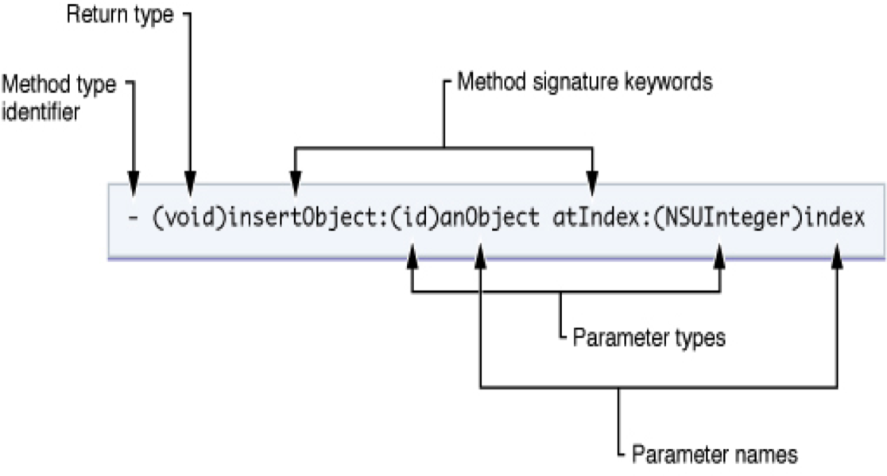

In this lab, we cover the basics of the xCode IDE, the iPhone simulator, xCode Documentation, and Objective-C. By the end of lab, we'll have built a simple iPhone appliation that displays weather from the wunderground.com API
To complete this lab, you'll need to download xCode 7.2 or work on a lab computer.
First, a little about xCode's layout:
 bottom: debugger (bottom left:variables, bottom right:console)")
Some helpful xCode shortcuts and tips
| View Documentation: | ⌥+Click |
| Open Docs: | ⌘+⇧+0 |
| Go to Definition: | ⌘+Click |
| Open file Quickly: | ⌘+⇧+O |
⌘ = Command | ⌥ = Option | ⇧ = Shift
Some helpful iPhone simulator shortcuts and tips
| Press Home Button: | ⇧⌘+H |
| Rotate Left | ⌘← |
| Rotate Right | ⌘→ |
| If the keyboard isn't appearing/disapperaing as expected: | Hardware -> Keyboard |
Xcode Documentation
Shortcut: ⌘+⇧+0

It's kind of amazing.

It syncs locally, which takes a while
But once it's downloaded, it's crazy fast.

It includes ready-to-build example projects for downloads.
You can get to class documentation by option+clicking the class in question.
Some info about Objective-C
Let's get this out of the way. Objective-C Looks Weird.

It's a strict superset of C, which adds a lot of cruft, which makes it a huge language. So it's kind of unweildy to manipulate.
Unfortunately, I'm running out of gifs to explain it to you. Enough fooling around. Let's bring the buzz-feed part of this lecture to a halt.
Let's look at some actual syntax
This example is clear enough. We're sending a method's selector (performAction to an object (object)
Here, you're sending a method's selector selector, with a parameter to the same object.
![[object performAction:firstParameter withTwoParameters:secondParameter]; object.performAction(firstParameter, secondParameter);](images/lab0/example3.png)
And now this.
Declaring methods looks odd, too. Sorry.
(Some of images were stolen from https://ashfurrow.com/blog/why-objective-c-is-hard-to-learn/, btw. There's a good post there.)
Objective-C Syntactic Sugar
There's some nice stuff built in, that's meant to simplify the syntax. For example, initializing arrays
NSArray *fizz = [NSArray arrayWithObjects:@"foo", @"bar", nil]
becomes
NSArray *fizz = @[@"foo", @"bar"]
or
NSNumber *num = [NSNumber numberWithInt:2];
becomes
NSNumber *num =@"2"
or
NSString *str = [myObj strProperty];
becomes
NSString *str = myObj.strProperty;
You might notice that syntactic sugar often begins with an @ symbol. This is the case.
Keep in mind that some of this syntactic sugar is pretty recent. So when you find old stackoverflow answers, they may use older notation.
Some References
- If you'd like to know more about C, here's a user's guide
- Ray Wenderlich has the best style guide out there. It'll make your c
- This Objective-C book is the staff favorite
- This iOS book is full of nice tutorials
- And then there's this indespensible reference for block syntax.